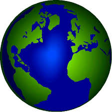
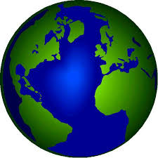

internacional 
internacional 
Varios días después del ataque terrorista contra dos hoteles de Susa que dejó 38 muertos -39 con el terrorista-. El atentado ha sido reivindicado esta madrugada por Estado Islámico (IS, en sus siglas en inglés) en las cuentas de Twitter del grupo yihadista. "El soldado del Califato Abu Yahya Al-Qayrawani atacó el Hotel Imperial", señala el texto en el que se subraya que la mayoría de los muertos son ciudadanos "de la alianza cruzada que combate el Estado del califato".
Según la organización, el ataque ha tenido por objetivo "antros de fornicación, de vicio y de apostasía de la ciudad de Susa". Poco antes de la medianoche, cientos de ciudadanos tunecinos se manifestaron en el centro de Túnez para mostrar su rechazo contra el terrorismo. "Esperemos que este horror pare aquí", decía Nadia poco después de la marcha. La concentración fue convocada por En Nahda, el partido islamista que gobierna en coalición con los liberales de Nidaa Tunis.
El Consejo de Seguridad Nacional acordó intensificar la seguridad. Debido al mes de ramadán, el mes del ayuno, los efectivos de seguridad habían disminuido. Otra de las medidas anunciadas es proceder al cierre de 80 mezquitas que difunden "propaganda y veneno" en apoyo al terrorismo.